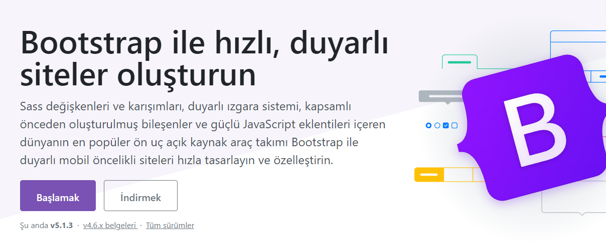
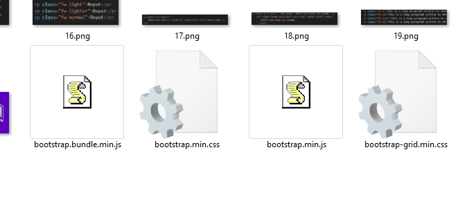

BOOTSTRAP İLE METİN BİÇİMLENDİRME YÖNTEMLERİ
BOOTSTRAP İLE METİN BİÇİMLENDİRME YÖNTEMLERİ
Bootstrap web geliştirmek için kullanılan bir araç takımı sistemidir. Bu sistemde belirli olan kütüphane ve etiketleri kullanarak sizlere sağlamış oluğu özellikleri kullanabilirsiniz ve web sayfanızı daha kullanılır ve göze hitap eden bir sayfa yapabilirsiniz. Bu araç takımını eski Twitter çalışanları olan Mark Otto ve Jacob Thornton tarafından oluşturulmuştur. Bu bölümde ise bu araçların özelliklerinden olan metin biçimlendirme yöntemlerini bu web sitesi üzerinden örnekler ve görseller ile anlatacağım. Öncelikle bu araç eklentisini kullanabilmek için kütüphaneyi indirip kurmanız lazım. O yüzden Bootstrap bağlantısına tıklayarak gerekli dosyaları indirebilirsiniz.
Bootstrap, kullanılabilir kod parçalarından oluşan açık kaynaklı ve ücretsiz bir web uygulaması geliştirme araç takımıdır. Sahip olduğu CSS ve JavaScript taslakları, web sitelerinin ve mobil uygulamaların kullanıcılara görünen bileşenleri için kullanılır.
Kütüphaneyi kullanabilmek için vermiş olduğum linkten dosyaları indiriniz.
Dosyayı indirdikten sonra rar dosyasındaki dosyaları dışarı çıkarıp kodlarınızın yazılı olduğu klasöre ekliyorsunuz.
Şimdide kodunuzu yazdıpınız derleyicide head kısmına vermiş olduğum kütüphane uzantılarını ekliyorsunuz ve eklentileriniz çalışacaktır.
Metin Rengi İçin Kullanılabilecek Sınıflar:
Buradaki renk özellikleri kullanarak sayfanızdaki kelimlere kullanım amacına yönelik daha vurgulu hale getirebilirsiniz.Class içine text-warning yazarak elde edilecek renk.
Class içine text-primary yazarak elde edilecek renk.
Class içine text-info yazarak elde edilecek renk.
Class içine text-danger yazarak elde edilecek renk.
Class içine text-success yazarak elde edilecek renk.
Class içine text-secondary yazarak elde edilecek renk.
Class içine text-dark yazarak elde edilecek renk.
Class içine text-muted yazarak elde edilecek renk.
Class içine text-light yazarak elde edilecek renk.
Class içine text-white yazarak elde edilecek renk.
Metin Arka Plan İçin Kullanılabilecek Sınıflar:
Buradaki renk özellikleri kullanarak sayfanızda ayrı kutular oluşturulurClass içine bg-primary yazarak elde edilecek renk.
Class içine bg-secondary yazarak elde edilecek renk.
Class içine bg-succsess yazarak elde edilecek renk.
Class içine bg-danger yazarak elde edilecek renk.
Class içine bg-info yazarak elde edilecek renk.
Class içine bg-warning yazarak elde edilecek renk.
Metin İçinde Kullanılan Yazı Özellikleri
Metin içinde farklı amaçlara yönelik olarak kullanılabilecek özelliklerde etiketler.-Small Etiketi: Başlık etiketlerinin içinde kullanılarak ikincil bir metin eklememizi
sağlar.
Örnek: Metin küçüldü.
-Mark Etiketi: Metni dolgu rengi ile vurgulamakta kullanılır.
Örnek: Metin vurgulandı.
-Blockquote ve Footer Etiketi: Blockquote bir içeriği alıntılayarak göstermekte
kullanılır. Footer etiketi ile de kaynak belirtilebilir.
Alıntı yapmak için Blockquote etiketi.
https://github.com/
-Code Etiketi: Yazılan metni kod stili ile yazar.
Örnek: Bu bir koddur.
-Kbd Etiketi: ctrl + alt + del ile sayfadan çıkabilirsiniz.
Örnek: Çıkmak için ctrl+alt+del.
-Pre Etiketi: Metni dolgu rengi ile vurgulamakta kullanılır.
Örnek:
Genelde şiir tarzı alt
alta sıralı metinler
için kullanılır.
Görüntü bu şekülde olur.
-Small class: Uygulandığı metni normal halinden %85 daha küçük hale getirir.
Örnek:
Burası normal metin.
Burası %85 daha ufak metin.
-Metin Hizalamada Kullanılan Sınıflar: Metinleri sağa, sola, ortaya ve iki yana
hizalamak için kullanılan css class'ları:
Örnek:
Burası .text-center sınıfı uygulanmış bir p etiketi.
Burası .text-left sınıfı uygulanmış bir p etiketi.
Burası .text-right sınıfı uygulanmış bir p etiketi.
Burası .text-justify sınıfı uygulanmış bir p etiketi.
Burası .text-end sınıfı uygulanmış bir p etiketi.
Burası .text-center sınıfı uygulanmış bir p etiketi.
Burası .text-start sınıfı uygulanmış bir p etiketi.
-Metin Hizalamada Kullanılan Sınıflar: Metinleri ekran boyutuna göre kullanmak
istediğimiz zaman kod içinde değişiklik yaparak ekran boyutuna göre konumlandırabiliriz.:
Örnek:
Burası metin konumlandırma komutları uygulanmış bir p etiketi.
-Text-nowrap class: Metnin bulunduğu yere sığmadığında bile alta geçmesini
engelleyerek, tek satır halinde kalmasını sağlar.
Örnek:
text.nowrap sınıfı uygulanmış bir paragraf.
Ekranı küçülterek deneyebilirsiniz.
-Büyük-Küçük Harf Dönüşümleri: Metnin tamamının büyük, tamamının küçük ya da
kelimelerin ilk harflerinin büyük görünmesini sağlayan sınıflar:
Örnek:
.text-lowercase sınıfı ile bu metindeki tüm harfler küçük harf olarak görünüyor.
.TEXT-UPPERCASE SINIFI İLE BU METİNDEKİ TÜM HARFLER BÜYÜK HARF OLARAK GÖRÜNÜYOR.
.Text-Capitalize Sınıfı Ile Bu Metindeki Kelimelerin Ilk Harfleri Büyük Harf Olarak Görünüyor.
-List-unstyled class: Ol ve ul etiketleri ile oluşturulan listelerde, satır
başlarındaki numara - işaretleri ve sol margini kaldırır. Aşağıda bir ul listesi görüyorsunuz.
Örnek:
-List-inline class: Sıralı ve sırasız listelerde (ol-ul) tüm elemanların yan yana
yerleşmesini sağlar. Aşağıda bir ul listesi bulunmakta ve tüm elemanları yan yana görünmektedir.
Örnek:
-Text-break class:Kullanıcıdan yorum alındığında kullanıcı fazla metin girerse metni
kırarak aşağı satıra geçirir.
Örnek:
text.break sınıfı uygulanmış bir paragraf.Ekranı küçülterek deneyebilirsiniz.text.break sınıfı
uygulanmış bir paragraf.Ekranı küçülterek deneyebilirsiniz.text.break sınıfı uygulanmış bir
paragraf.Ekranı küçülterek deneyebilirsiniz.
-Font-size: Bootstrap özelliği kullanarak başlık boyutlarını ayarlayabiliriz.
Örnek:
Boyut
Boyut
Boyut
Boyut
Boyut
Boyut
-Font-weight classları: Bootstrap özelliği kullanarak yazı kalınlıklarını
ayarlayabiliriz.
Örnek:
Boyut
Boyut
Boyut
Boyut
Boyut
-Text-muted : Bootstrap özelliği kullanarak linki sıfırlayabiliriz .
Muted text with a reset link.
-Text-wrap : Metni text-wrap ile sarmak.
-Satır Yüksekliği: Satır arası boşlukları ayarlanır.
Bootstrap web geliştirmek için kullanılan bir araç takımı sistemidir. Bu sistemde belirli olan kütüphane ve etiketleri kullanarak sizlere sağlamış oluğu özellikleri kullanabilirsiniz ve web sayfanızı daha kullanılır ve göze hitap eden bir sayfa yapabilirsiniz.
Bootstrap web geliştirmek için kullanılan bir araç takımı sistemidir. Bu sistemde belirli olan kütüphane ve etiketleri kullanarak sizlere sağlamış oluğu özellikleri kullanabilirsiniz ve web sayfanızı daha kullanılır ve göze hitap eden bir sayfa yapabilirsiniz.
Bootstrap web geliştirmek için kullanılan bir araç takımı sistemidir. Bu sistemde belirli olan kütüphane ve etiketleri kullanarak sizlere sağlamış oluğu özellikleri kullanabilirsiniz ve web sayfanızı daha kullanılır ve göze hitap eden bir sayfa yapabilirsiniz.
Bootstrap web geliştirmek için kullanılan bir araç takımı sistemidir. Bu sistemde belirli olan kütüphane ve etiketleri kullanarak sizlere sağlamış oluğu özellikleri kullanabilirsiniz ve web sayfanızı daha kullanılır ve göze hitap eden bir sayfa yapabilirsiniz.
-Monospace : Bir seçimi tek aralıklı yazı tipi yığınımıza ile değiştirin.
This is in monospace
-Metin Dekorasyonu: Metin dekorasyon sınıfları ile bileşenlerdeki metni süsleyin.
Deneme metni.
Deneme metni.
Deneme metni.